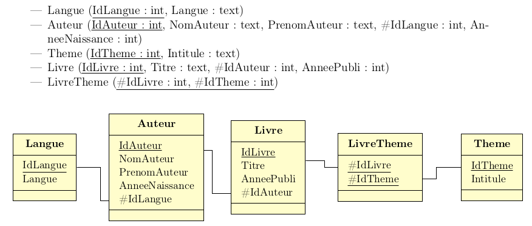

On rappelle ci-dessous le schéma relationnel de la base.

Cette base de données concerne des livres et des écrivains.
Vous serez guidés dans ce TP pour découvrir la syntaxe du langage SQL.
La base de données est désormais "complète". Vous pouvez consulter l'état des Tables ci-dessous.
SELECT DISTINCT
Titre, NomAuteur, PrenomAuteur, AnneeNaissance, Langue, AnneePubli
FROM RelationLivreTheme
JOIN Livre ON Livre.IdLivre = RelationLivreTheme.IdLivre
JOIN Auteur ON Auteur.IdAuteur = Livre.IdAuteur
JOIN Langue ON Langue.IdLangue = Auteur.IdLangue; pour visualiser de façon plus 'agréable' les infos que nous possédons sur les llivres.